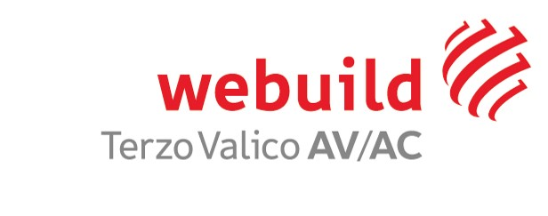

Portale Gestione Ambientale
Terzo Valico dei Giovi — COCIV
Torna alla Gestione
Intestazione e Luogo
Logo Impresa Esecutrice
WBS / Luogo di Produzione
Produttore del Rifiuto
Codice EER (Anagrafica Completa)
Seleziona o cerca Codice EER
Descrizione Associata / Personalizzata
Caratteristiche HP
Pittogrammi CLP (Immagini ufficiali)
Stampa A4 Orizzontale
Stampa A3 Orizzontale

Linea Ferroviaria AV/AC
Terzo Valico Di Giovi
caricare logo impresa esecutrice
WBS / Luogo di Produzione
CRAVASCO
Rifiuti misti dell'attività di costruzione e demolizione, diversi da quelli di cui alle voci 17 09 01, 17 09 02 e 17 09 03
17 09 04
Produttore
Consorzio Tunnel Giovi
Caratteristiche di Pericolo del Rifiuto